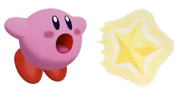

Kirby é o protagonista titular da série de videogames Kirby da Nintendo . Ele fez sua estreia em 1992, estrelando em Kirby's Dream Land . A série está em execução há três décadas e mais de trinta títulos foram lançados sob o nome de Kirby, a maioria dos quais desenvolvidos pela HAL Laboratory , Inc. ou publicados pela HAL para estúdios de co-desenvolvimento.
“Kirby tem muitos movimentos! Tente eles! ” — Descrição introdutória • Kirby's Adventure
A técnica de assinatura de Kirby é sua inspiração e a tem executado desde Kirby's Dream Land . Está disponível em quase todos os jogos de plataforma Kirby padrão, com exceção de Kirby's Epic Yarn e Kirby Mass Attack
Depois de inalar qualquer coisa, Kirby tem a opção de engolir ou cuspir de volta como um ataque Star Spit . A partir de Kirby's Adventure , Kirby recebe uma habilidade de cópia caso o jogador decida engolir um inimigo com um poder especial. as habilidades de cópia essencialmente permitem que Kirby imite o inimigo que ele acabou de engolir, mas em títulos posteriores como Kirby Super Star , cada habilidade de cópia tem vários movimentos que Kirby pode executar em vez de apenas um ou dois.
 Kirby tem um corpo macio e flexível. Isso permite que ele seja achatado ou esticado, voltando sempre à sua forma original. Ele pode se inflar, tornando-se mais flutuante, e pode bater os braços para pairar . Na maioria dos jogos, ele pode fazer isso indefinidamente. Ele pode expirar para se esvaziar e usar o ar exalado como um ataque. Esta técnica é conhecida como Air Gun . Em certos jogos a capacidade de pairar do Kirby é limitada.
Em todos os jogos após Kirby's Adventure , Kirby pode fazer um movimento conhecido como chute deslizante ou ataque deslizante enquanto se agacha como um ataque básico que causa danos menores. se Kirby der um chute deslizante voltado para baixo em uma inclinação íngreme, ele rolará para baixo e passará por cima de todos os inimigos em seu caminho.
Estreando em Kirby Super Star , Kirby aprende o movimento Guarda , que lhe permite se proteger de ataques inimigos, e levar pouco ou nenhum dano. Ao jogar com vários jogadores em Kirby's , um Team Attack , que envia uma grande bola de energia, é realizado por dois ou mais personagens guardando e liberando sua guarda em ao mesmo tempo depois de um determinado período de tempo ao montar Piggyback .